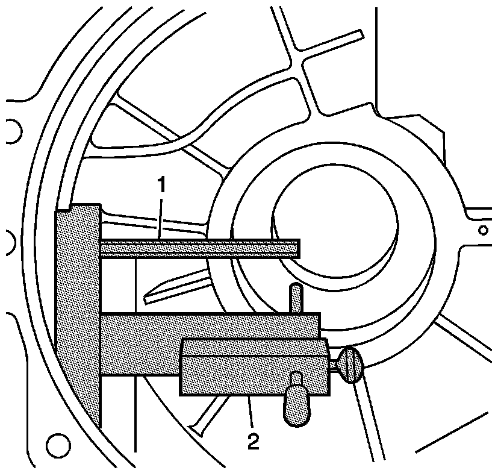
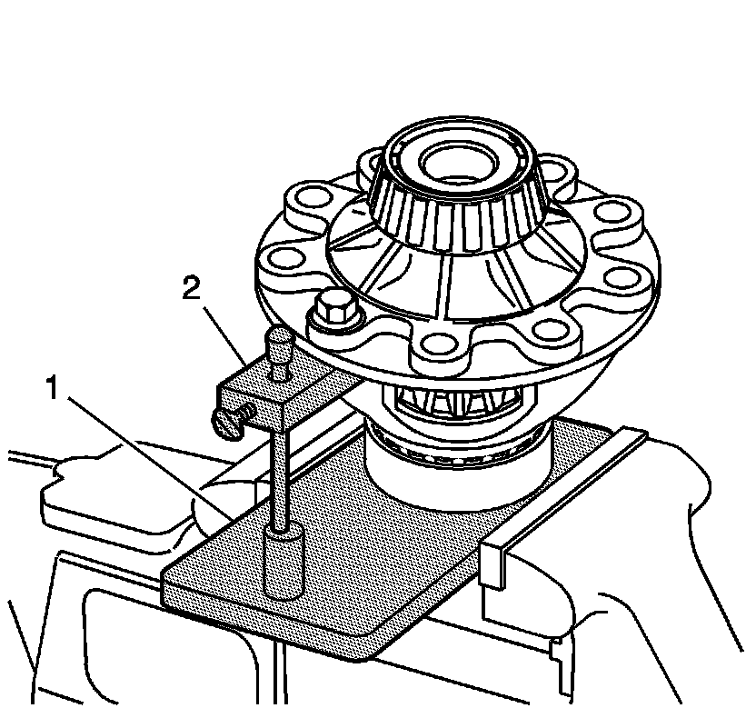
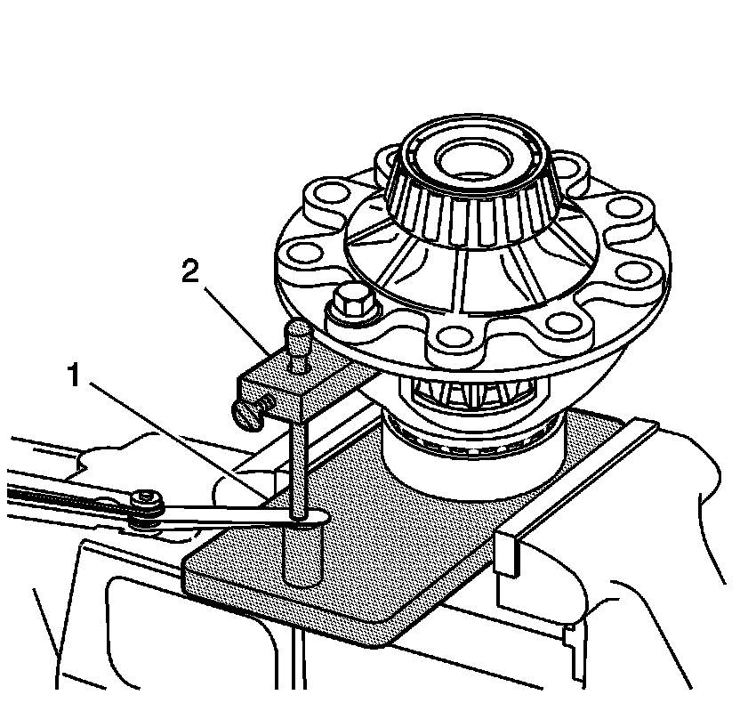
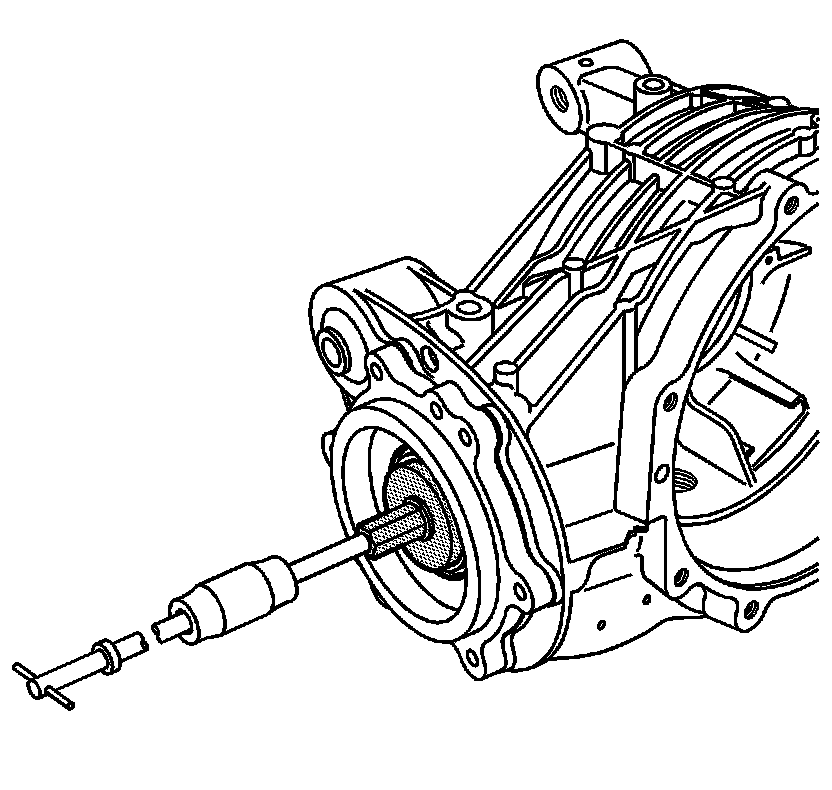
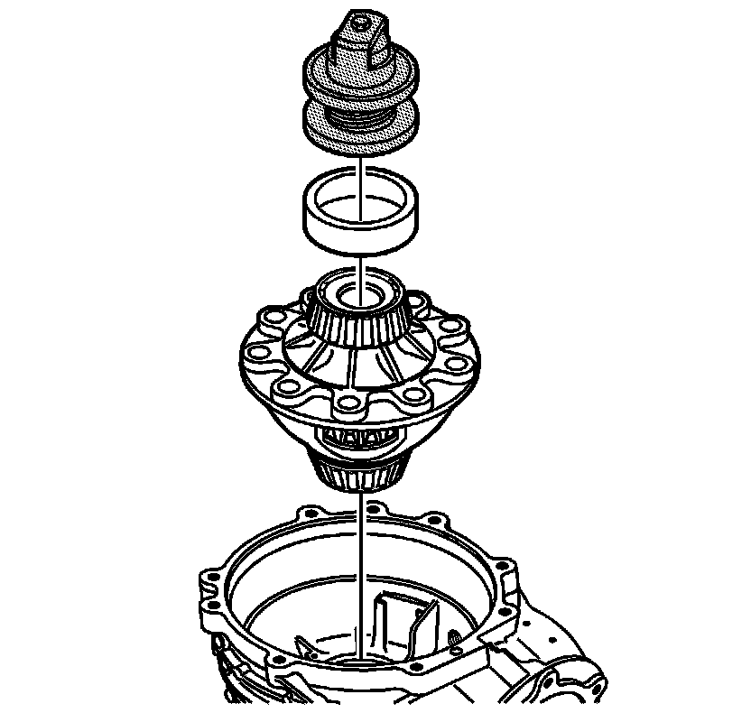
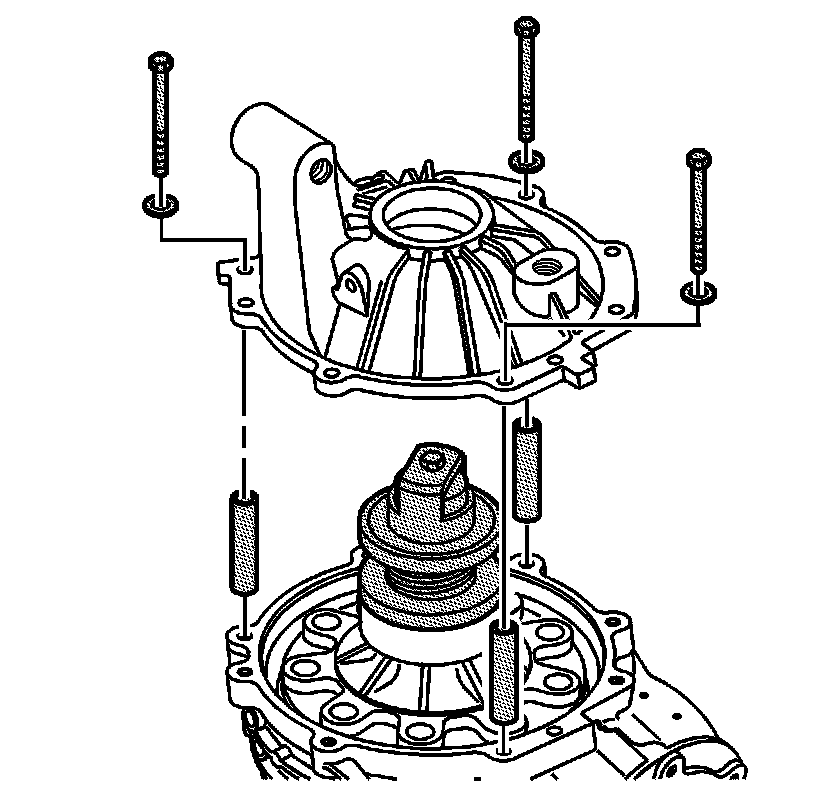
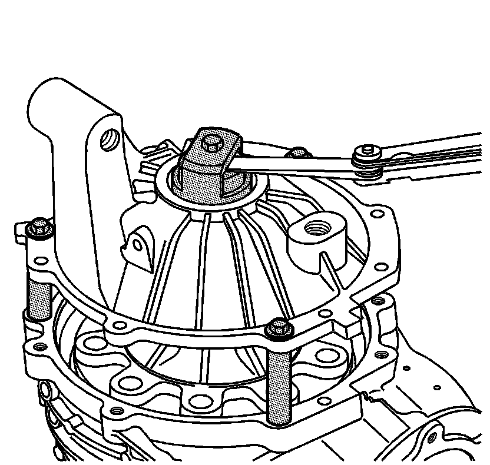

Differential Carrier Bearing Preload Adjustment
Differential Carrier Bearing Preload Adjustment
Tools Required
* J 24433 Pinion Cone and Side Bearing Installer
* J 42168-16 Spacers
* J 45010 Getrag Axle Bearing Race Installer
* J 45013-1 Cover Shim Gage
* J 45013-2 Gage Assembly
* J 45013-4 Gage Plate
* J 45013-6 Depth Gage

1. Use the J 45013-6 (2) drop rod. Loosen the thumb screw and drop the rod through the hole on J 45013-2 (1).
2. Ensure the rod bottoms out in the bearing cup bore. Snug the thumb screw in order to record the distance.
3. Install the differential side bearings. Refer to Differential Side Bearings Assemble (Service and Repair) .

4. Use an old ring gear bolt. Attach the J 45013-6 (2) to the differential case as shown.
5. Ensure that the drop rod aligns with the post of J 45013-4 (1).
6. Snug the bolt.

7. Measure the gap (1) between the rod and the post on J 45013-6 (2). Record the measurement as C1.
8. Spin the differential case and ensure that the measurement stayed the same.
9. Subtract the measured distance from 5 mm (0.197 in). This is the differential right shim value C2. Record this distance.
10. Remove the tools.

11. Remove the pinion cage bolts.

12. It may be necessary to heat the carrier in order to remove the pinion bearing housing.
13. Screw the slide hammer into the bolt that holds the shimming tools in the pinion housing.
14. Pull the housing from the carrier.
15. Remove all of the shimming tools.

16. Install the shims (18) measured for the differential assembly side bearing cup (19).
17. Lightly lubricate the cup with gear lube.
18. Using J 24433 and J 45010 and a press, install the bearing cup until it seats.

19. For limited slip differential, the ring gear must be properly installed in order to hold the differential case together. Refer to Ring Gear and Differential Housing Assemble (Service and Repair) .
20. Install the differential case into the differential carrier.
21. Install the bearing cup and J 45013-1 on top of the cup as shown.

22. Using J 42168-16 , install the bolts, spacer and washer through the cover. Snug the bolts.

23. Measure the gap as shown. This is the left side differential bearing shim side.
24. Remove the bolts, cover and tools.

25. Using J 24433 and J 45010 , install the measured shims (18) in the cup bore.
26. Lightly coat the cup (19) with gear lube.
27. Press the cup into the bore until it seats.